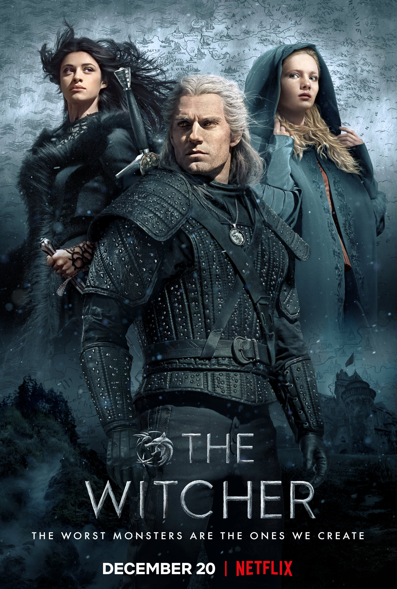

Bevezetés
Az oldal játékokat mutat be és leírásokat ad a jelenlegi updatekről, a jövőbeli frissítésekről, a játékok tartalmairól, karaktereiről, vagy éppen fegyvereiről a játékmenethez.
- A witcher 4 készülőben van
- GTA 7 modok megjelentek
- Egy Kóreai játékos kijátszotta a League of Legendset
- Sylvanas Elpusztult Gorran a új warchief és Zerodemon az Új Lich King által
- A Mókusok jobb gamerek mint a Lengyelek és a Csehek?
- A káromkodás erősebbé teszi a karaktereidet!!!
© Minden jog fenntartva!